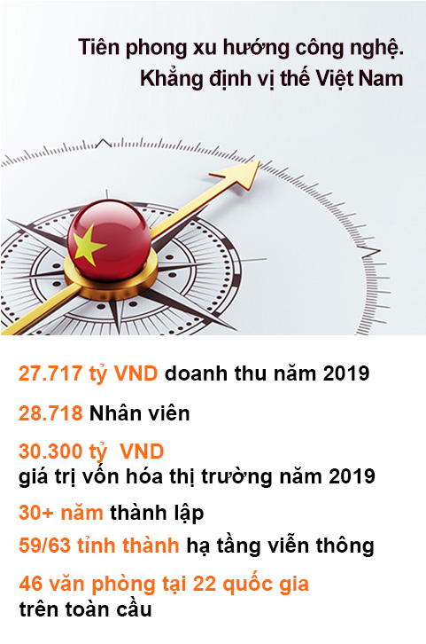

FPT Polytechnic
Thực học - thực nghiệm

GIỚI THIỆU CHUNG
Năm 1988, 13 nhà khoa học trẻ thành lập Công ty FPT với mong muốn
xây dựng “một tổ chức kiểu mới, giàu mạnh bằng nỗ lực lao động
sáng tạo trong khoa học kỹ thuật và công nghệ, làm khách hàng hài
lòng, góp phần hưng thịnh quốc gia, đem lại cho mỗi thành viên của
mình điều kiện phát triển đầy đủ nhất về tài năng và một cuộc sống
đầy đủ về vật chất, phong phú về tinh thần.”
Không ngừng đổi mới, liên tục sáng tạo và luôn tiên phong mang lại
cho khách hàng các sản phẩm/ giải pháp/ dịch vụ công nghệ tối ưu
nhất đã giúp FPT phát triển mạnh mẽ trong những năm qua. FPT trở
thành công ty công nghệ lớn nhất trong khu vực kinh tế tư nhân của
Việt Nam với hơn 28.000 cán bộ nhân viên, trong đó có 17.628 nhân
sự khối Công nghệ. Đồng thời, FPT cũng là doanh nghiệp dẫn đầu
trong các lĩnh vực: Xuất khẩu phần mềm; Tích hợp hệ thống; Phát triển
phần mềm; Dịch vụ CNTT. Hầu hết các hệ thống thông tin lớn trong
các cơ quan nhà nước và các ngành kinh tế trọng điểm của Việt Nam đều
do FPT xây dựng và phát triển.
FPT sở hữu hạ tầng viễn thông phủ khắp 59/63 tỉnh thành tại Việt
Nam và không ngừng mở rộng hoạt động trên thị trường toàn cầu với
46 văn phòng tại 22 quốc gia và vùng lãnh thổ bên ngoài Việt Nam.
Trong suốt quá trình hoạt động, FPT luôn nỗ lực với mục tiêu cao nhất
là mang lại sự hài lòng cho khách hàng thông qua những dịch vụ, sản
phẩm và giải pháp công nghệ tối ưu nhất. Đồng thời, FPT không ngừng
nghiên cứu và tiên phong trong các xu hướng công nghệ mới góp
phần khẳng định vị thế của Việt Nam trong cuộc cách mạng công
nghiệp lần thứ 4 - Cuộc cách mạng số. FPT sẽ tiên phong cung
cấp dịch vụ chuyển đổi số toàn diện cho các tổ chức, doanh nghiệp trên
quy mô toàn cầu.